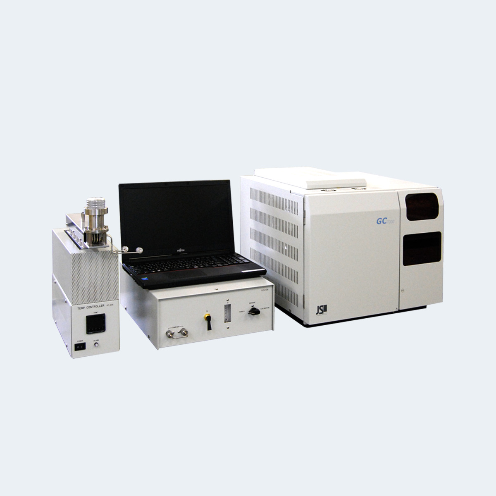
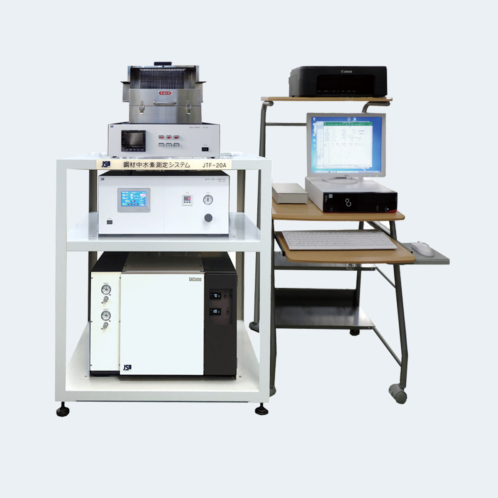

<main id="main">

    <!-- ======= Breadcrumbs ======= -->
    <!-- <div class="breadcrumbs d-flex align-items-center" style="background-image: url('assets/img/lab/gc206_p.jpg');">
      <div class="container position-relative d-flex flex-column align-items-center" data-aos="fade">
  
        <h2>Products</h2>
        <ol>
          <li><a href="index.html">Home</a></li>
          <li>GAS Chromatograph Lab Products</li>
        </ol>
  
      </div>
    </div> -->
    <!-- End Breadcrumbs -->
    <!--  -->
  
    <section id="projects" class="projects">
      <div class="container" data-aos="fade-up">
  
            <div class="portfolio-isotope  " data-portfolio-filter="*" data-portfolio-layout="masonry" data-portfolio-sort="original-order">
  
  
  
              <div class="col-md-1">
                <table class="table portfolio-flters table-bordered">
                  <thead>
                    <tr>
                      <th><li data-filter="*" class="filter-active" style="font-size: small; ">Lab</li></th>
                    </tr>
                  </thead>
                  <tbody>
                    
                    <tr>
                      <td><li data-filter=".filter-dhm"style="font-size: small;">GC206 Diffusible Hydrogen Measurement System </li></td>
                    </tr>
                    <tr>
                      <td><li data-filter=".filter-his"style="font-size: small;">JTF-20A Series Hydrogen in Steel Measurement System </li></td>
                    </tr>
                  </tbody>
                </table>
              </div>
              
              
      
              <div class="row gy-4 portfolio-container" id="two" data-aos="fade-up" data-aos-delay="200"> 
      
                <div class="col-md-12  portfolio-item filter-dhm">
                  <div class="card">
                  <div class="row">
                    <div class="col-md-4 d-flex align-items-center">
                      
                    </div>
                    <div class="col-md-8 d-flex align-items-center">
                      <div>
                        <h4>GC206 Diffusible hydrogen measurement system </h4>
                        <p>Diffusible Hydrogen Measurement System GC206

                            Large amounts of hydrogen in the weld metal can cause cracks in the weld after welding. Therefore, it is important to understand the hydrogen during steel welding. This system uses a test piece to measure hydrogen during steel welding. Designed and manufactured in accordance with JIS: Z3118 standards, it is a long-selling product that has also received inquiries from overseas customers.</p>
                           <li>Minimum detectable amount of h4: 0.0005mL
                        </li>
                        <li> The capsule is removable for easy insertion and removal of test specimens.
                        </li>
                        <li>   Two types of capsules can be used depending on the size of the test piece.
                        </li>
                        </div>
                    </div>
                    <div class="col-md-12 d-flex justify-content-center">
                        <a [routerLink]="['/contact']" >
                            <button class="btn" style="border-radius: 20px; border-color: blueviolet ;  " >
                                Get Qoute
                            </button>
                        </a>
                      </div>
                  </div>
                </div>
                </div>
      
                <div class="col-md-12  portfolio-item filter-his">
                  <div class="card">
                    <div class="row">
                      <div class="col-md-4 d-flex align-items-center">
                        
                      </div>
                      <div class="col-md-8 d-flex align-items-center">
                        <div>
                          <h4>JTF-20A series Hydrogen in steel measurement system 
                        </h4>
                          <p>JTF-20A Series

                            Steel Hydrogen Measurement System
                            
                            Investigating the behavior of hydrogen, which is the cause of delayed fracture in steel, is an important factor in understanding changes in the amount of hydrogen absorbed by steel and the amount of hydrogen that penetrates from the environment, and in assessing delayed fracture. This system uses thermal desorption analysis (TDA) to raise the furnace temperature from low to high at a constant rate, and continuously measures the amount of hydrogen released with temperature change using gas chromatography, analyzing the amount of hydrogen released versus temperature.</p>

                            <li>Trace amounts of hydrogen can be measured using the TDA method, which uses gas chromatography.</li>
                            <li>The heating rate, temperature range, etc. can be changed as desired.</li>
                            <li>The temperature-amount of released hydrogen is displayed in a graph and table.</li>
                            <li>The tubular furnace is openable and easy to handle.</li>
                            <li>The overheating prevention device ensures complete safety.</li>
                            <li>Components other than hydrogen can also be measured (optional).</li>
                            
                            
                            

                        </div>
                      </div>
                      <div class="col-md-12 d-flex justify-content-center">
                          <a [routerLink]="['/contact']" >
                              <button class="btn" style="border-radius: 20px; border-color: blueviolet ;  " >
                                  Get Qoute
                              </button>
                          </a>
                        </div>
                      </div>
                    </div>
                  </div>
      
                 
      
                
      
              </div><!-- End Projects Container -->
      
            </div>
           
            
  
  
           
  
  
            
  
          
      </div>
    </section><!-- End Our Projects Section -->
  
  </main><!-- End #main -->